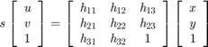
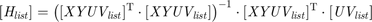
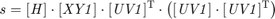

Get 2D Homography of a projective geometry transform
- Author: WANG Lei,USTB
- Date:2016/3/3
- Algorithom:
Get s and [ H ] From:

By solving:
![$$\left[\begin{array}{cccccccc}
\mathit{x}_{1} & \mathit{y}_{1} &1 &0 &0 &0 & \mathit{-u}_{1}\mathit{x}_{1}& \mathit{-u}_{1}\mathit{y}_{1}\\
0 &0 &0 & \mathit{x}_{1} & \mathit{y}_{1} &1 & \mathit{-v}_{1}\mathit{x}_{1}& \mathit{-v}_{1}\mathit{y}_{1}\\
& & & & \vdots\\
\mathit{x_{n}} & \mathit{y_{n}} &1 &0 &0 &0 & \mathit{-u_{n}}\mathit{x_{n}}& \mathit{-u_{n}}\mathit{y_{n}}\\
0 &0 &0 & \mathit{x_{n}} & \mathit{y_{n}} &1 & \mathit{-v_{n}}\mathit{x_{n}}& \mathit{-v_{n}}\mathit{y_{n}}\\
\end{array}\right]
\left[\begin{array}{c}
\mathit{h}_{11} \\ \mathit{h}_{12} \\ \mathit{h}_{13}\\
\mathit{h}_{21} \\ \mathit{h}_{22} \\ \mathit{h}_{23}\\
\mathit{h}_{31} \\ \mathit{h}_{32}
\end{array}\right]=
\left[\begin{array}{c}
\mathit{u}_{1} \\ \mathit{v}_{1} \\ \vdots \\ \mathit{u_{n}} \\ \mathit{v_{n}}
\end{array}\right]$$](GetHomography2D_eq10718387655869429946.png)


- Inputs:
XY----cordNum by pointNum matrix,
cordNum==2,pointNum>=4,
[x1,x2,...;
y1,y2,...]
UV----cordNum by pointNum matrix,
cordNum==2,pointNum>=4,
[u1,u2,...;
v1,v2,...]- Outputs:
H----3 by 3 matrix: [h11 h12 h13;
h21 h22 h23;
h31 h32 1]
s----projective parafunction [H,s] = GetHomography2D(XY,UV) % Initial [cordNum, pointNum]=size(XY); if ~(cordNum==2 || cordNum==3) error('Input matrix size error!'); end XY1=ones(3,pointNum,'double'); XY1(1:2,:)=XY(1:2,:); UV1=ones(3,pointNum,'double'); UV1(1:2,:)=UV(1:2,:); HList=zeros(8,1,'double'); XYUVList=zeros(2*pointNum,8,'double'); UVList=zeros(2*pointNum,1,'double'); for i=1:pointNum XYUVList(i*2-1,:)=[XY(1,i), XY(2,i), 1, 0, 0, 0, -1*UV(1,i)*XY(1,i), -1*UV(1,i)*XY(2,i)]; XYUVList(i*2,:)=[0, 0, 0, XY(1,i), XY(2,i), 1, -1*UV(2,i)*XY(1,i), -1*UV(2,i)*XY(2,i)]; UVList(i*2-1,:)=UV(1,i); UVList(i*2,:)=UV(2,i); end % Algorithm HList=inv(XYUVList'*XYUVList)*XYUVList'*UVList; % Set outputs H(1,:)=HList(1:3,1); H(2,:)=HList(4:6,1); H(3,1:2)=HList(7:8,1); H(3,3)=1; s=H*XY1*UV1'*inv(UV1*UV1');
Error using GetHomography2D (line 62) Not enough input arguments.